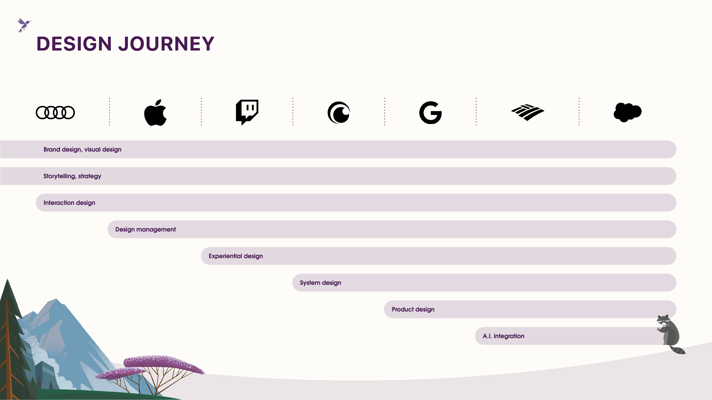
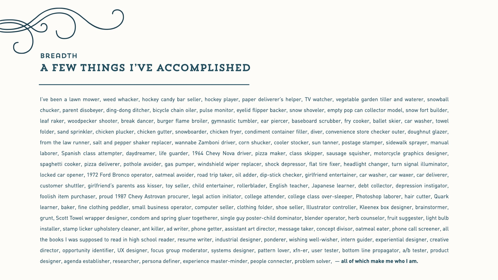
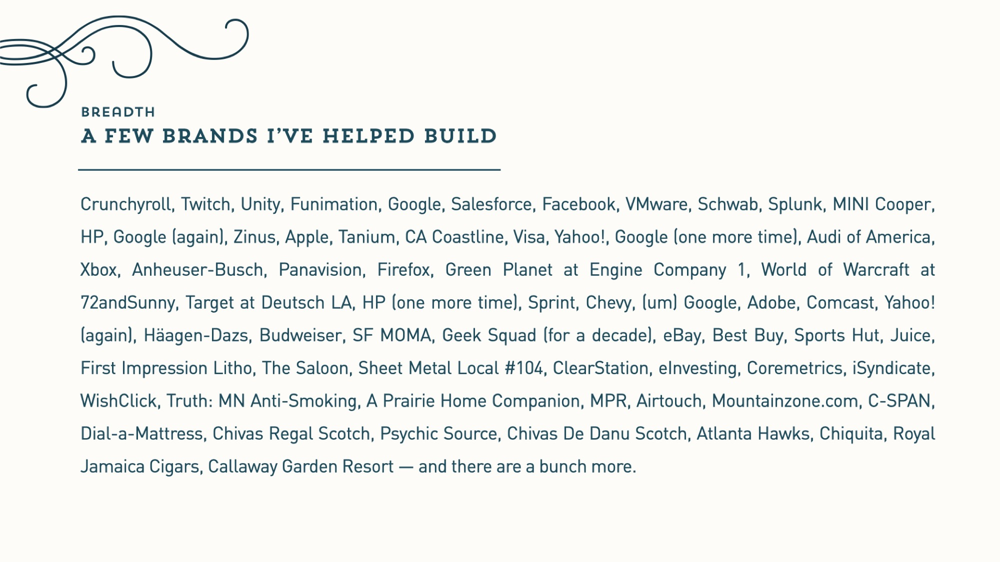
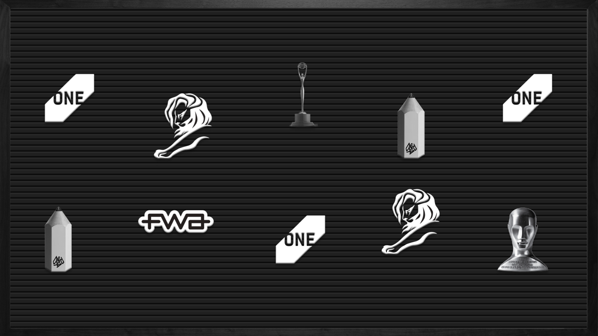
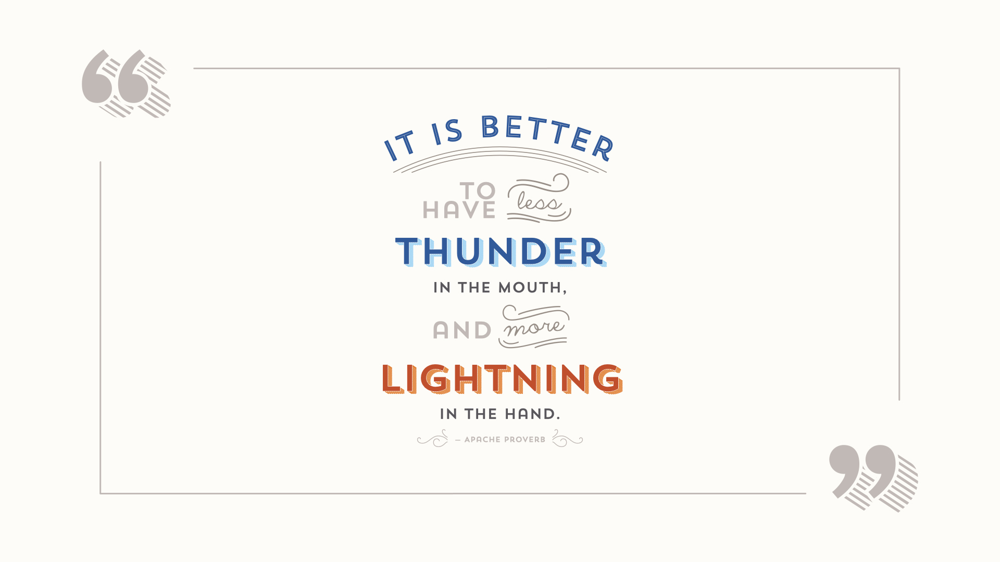
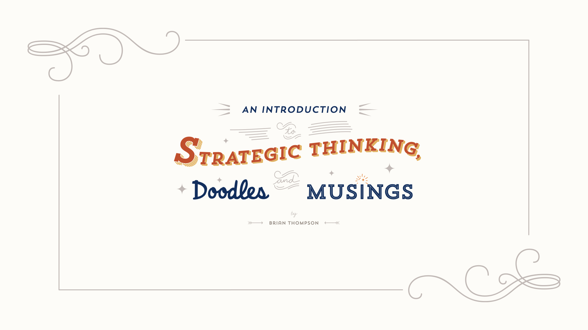

Senior Product Designer,
AI & Intelligent Systems
Hello. I’m Brian, and my design leadership spans UX strategy, human-centered design, AI/ML integration, and execution. I orchestrate user experience, system design, and intelligent technology to help people and companies collaborate effectively. Oh yeah, all that and I’m also a nice person. Go figure.
In a nutshell.
I’ve worn many hats — strategist, writer, designer, art director, emerging technologist, creative director, storyteller, and experience designer. At my core, I’m a curious, tenacious, creative problem solver across interaction, branding, research, experiential, and product design.

My Approach.
I amplify the languages of user experience, system design, and AI/ML integration to help people and companies accomplish amazing things together. I understand and anticipate how people will perceive, interpret, and respond to these cues, then create avenues for engagement — without forgetting where I came from.


Results driven.

Collaboration and Leadership.
I have built, evolved, and deepened relationships with cross-functional teams, including developers, product managers, and stakeholders.
- Conducted 1:1 cross-functional and C-level interviews to identify and implement new collaboration efforts
- Developed and implemented my “octopus” model of embedding UX and brand SMEs within each business unit
- Identified and established a career ladder system and role definition for UX, brand, creative ops, and production

Continuous learning.
- UX/UI Design Boot Camp — UC Berkeley
- Google Foundations of UX Design
- Wearable/Smart Device UX Design — Santa Clara University
- Mobile UX Design — UC San Francisco

Mission.
My focus is on creating user-centric designs based on user research, usability testing, and feedback. My ability to empathize with people, understand their needs, then design experiences that provide seamless and delightful engagement.
I’m a creative problem solver and leader who conceptualizes, designs, writes, and launches end-to-end revenue-driving experiences across different surfaces, allowing people to flow seamlessly from one medium to another.
I tirelessly leverage all the passion I have for being at the forefront of product design. Helping companies shape the future of industries, and hopefully cultures, through experience design is precisely the type of challenge that complements and fuels my professional ambitions.
My design thinking experience across E2E, E2C, and C2C provides a unique, empathetic, and intelligent combination of transferable skills. I’ve collected a select number of examples that showcase my experience design work across several industries and companies. And have more upon request.
Interested?

“Even though the rest of my team was holding up #1s, I opted for four — I guess I’ve always looked at the big picture.”